Todo tu mundo, tus personajes y tu manuscrito en un solo lugar.
Sin cuenta, sin nube, sin pagos recurrentes — tus historias, siempre tuyas.
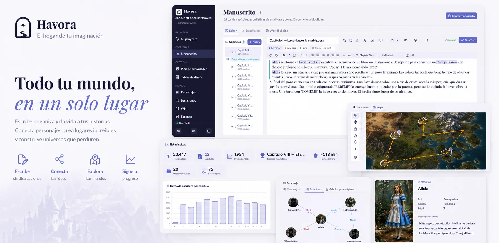
Una historia, repartida en media docena de herramientas que no se hablan entre sí.
Havora reúne todo eso en un solo lugar.
Havora no es solo un editor de texto. Es el lugar donde un personaje deja de ser una idea suelta y se convierte en alguien con un rostro, un mapa y una historia propia — donde tu mundo existe, se puede recorrer y recordar, incluso antes de que termines de escribir la primera página.
Cada ficha, cada mapa, cada línea de tiempo es una puerta más hacia el universo que estás construyendo. Tú pones la imaginación; Havora le da un lugar donde vivir.
El hogar de tu imaginación.
Tres pilares, una sola app — sin saltar entre Word, Notion y una wiki aparte.
Fichas de personajes, mapa, escenas y wiki quedan conectados entre sí — antes de escribir la primera línea, ya tienes dónde apoyarte.
Modo Zen, corrector ortográfico offline, sprints cronometrados e historial de versiones — para que la única decisión sea qué escribir después.
Exporta a DOCX, EPUB o TXT con un clic, eligiendo qué capítulos incluir — con el formato listo para editoriales o lectores beta.
Herramientas serias, sin curva de aprendizaje eterna ni diez archivos abiertos a la vez.
Capítulos con estados, corrector ortográfico y todas las herramientas a un clic — sin perder el foco en el texto.
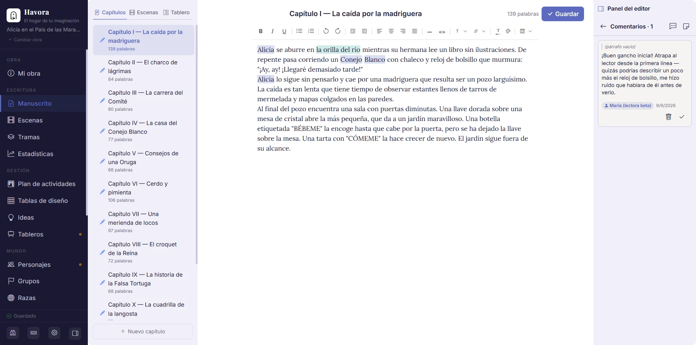
Activa el modo Zen y desaparece todo menos el texto: sin barras, sin notificaciones, sin ruido visual.
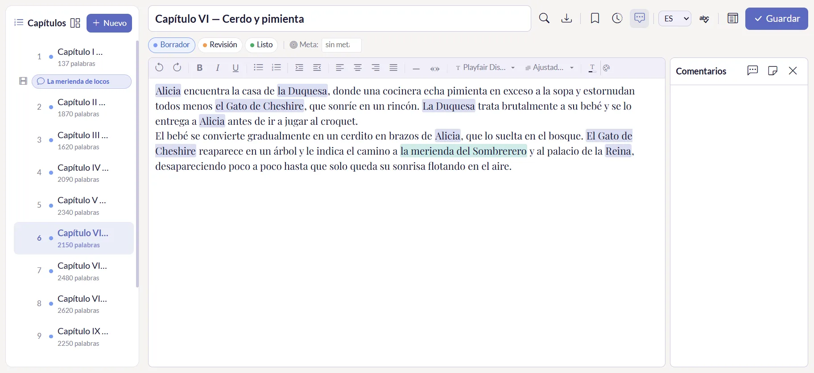
Un panel que te muestra tu progreso real: palabras escritas, racha diaria y ritmo por capítulo. Escribir con datos, no con suposiciones.
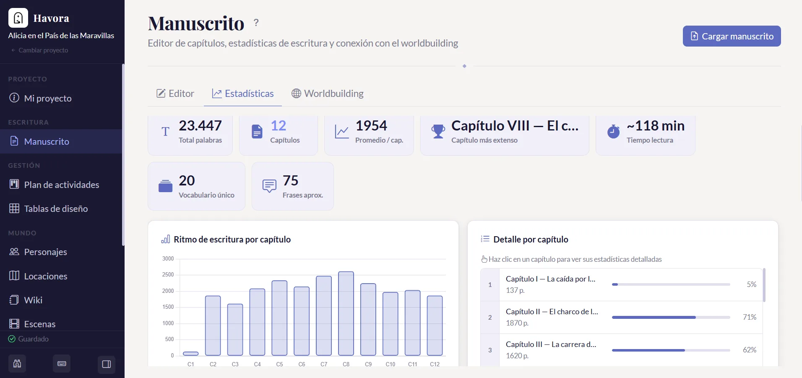
Física, personalidad, historia, relaciones y arco narrativo — todo en una ficha, con foto de perfil y sprite para el mapa.
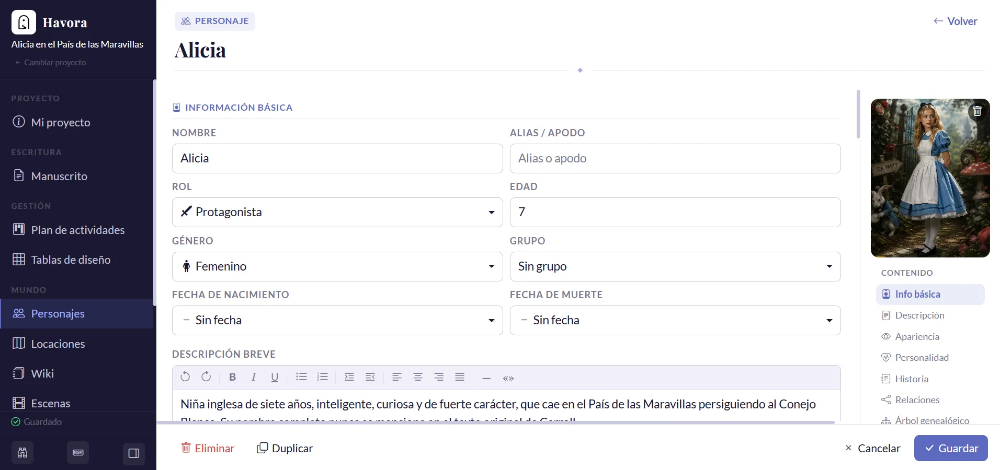
Personajes, locación, POV y subtrama de cada escena — asignada directo a un capítulo. Lo que no cuadra, lo ves aquí antes que el lector.
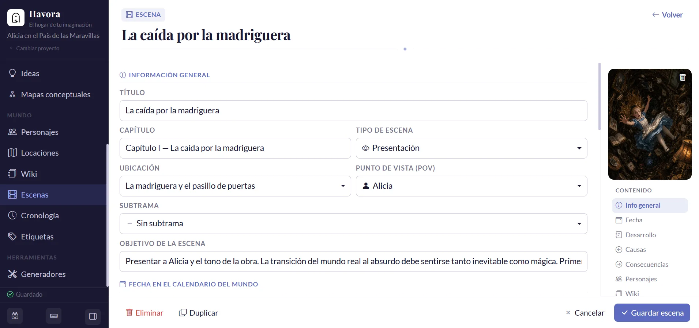
Fichas con galería, ambiente, personajes que las frecuentan y escenas vinculadas — enlazadas al mapa para que nunca pierdas la coherencia geográfica.
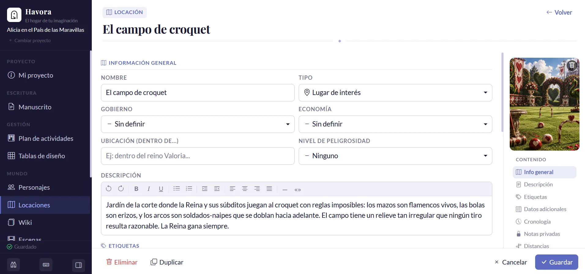
El lugar para todo lo que no encaja en una ficha estándar: magia, culturas, idiomas, objetos únicos. Tú decides qué documentar y cómo.
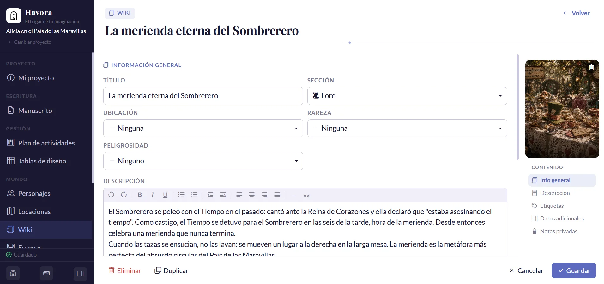
Dibuja el mapa con capas, ubica personajes y locaciones, y calcula distancias y tiempos de viaje reales.
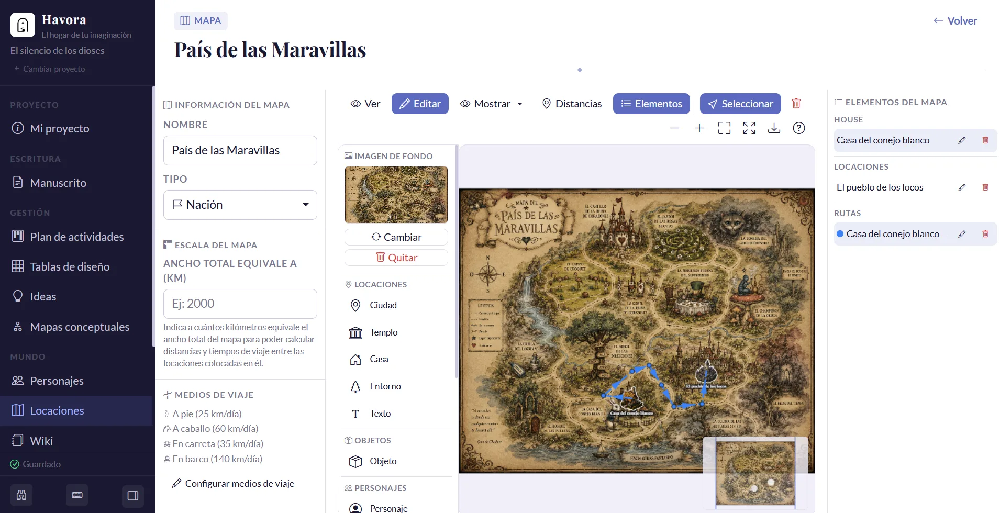
Gráfico de relaciones con tipos personalizables y árbol genealógico generación a generación. Organizado así, no se te escapa una contradicción de sangre.
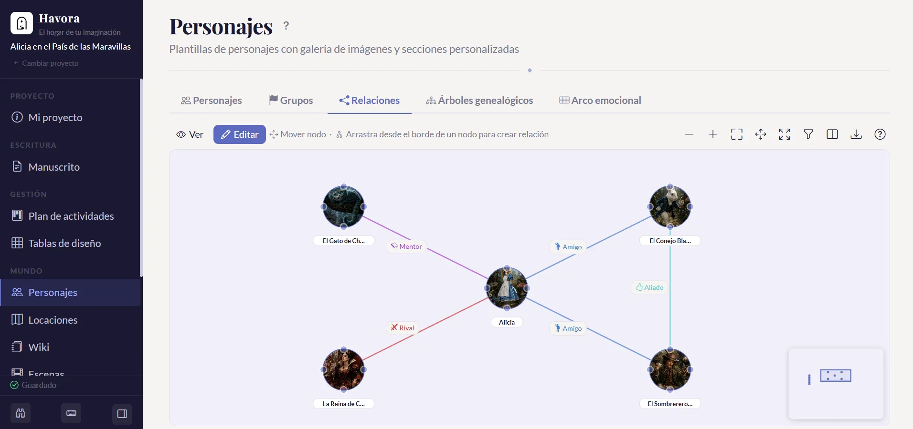
Ubica cada evento en una línea de tiempo con tu propio calendario, y detecta conflictos de fechas antes de que un lector los note.
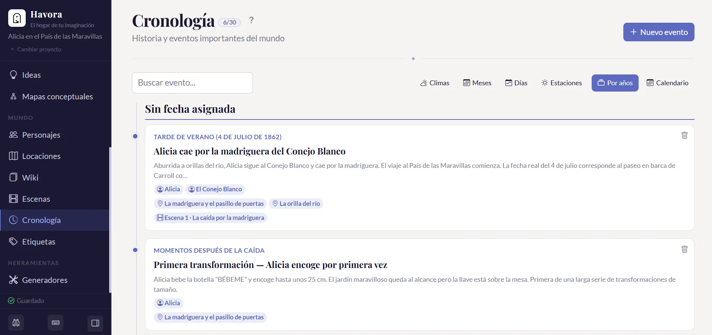
Havora no impone una estructura rígida. Define tipos de personaje, relación, escena y tu propio calendario — para que la herramienta encaje en tu mundo, no al revés.
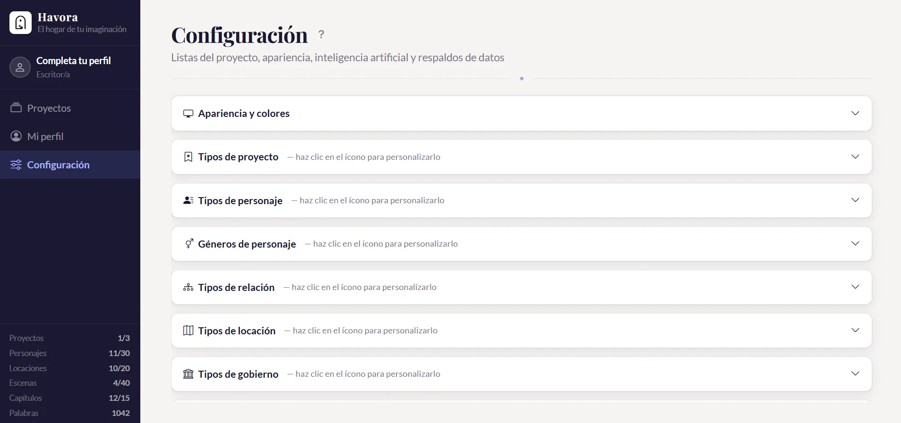
Los nombres de personajes y locaciones se vuelven referencias activas mientras escribes. Y el buscador general encuentra cualquier dato de la app en un solo campo.
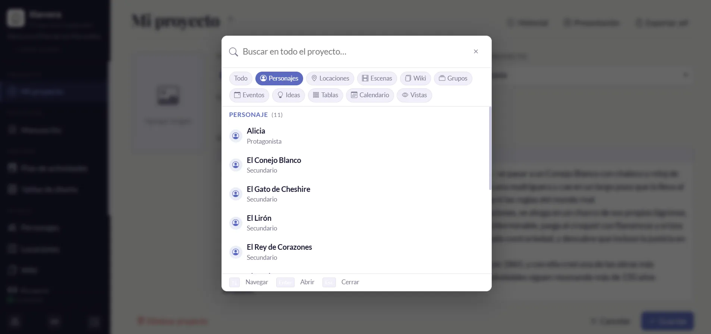
Havora integra en un solo proyecto todo lo que normalmente necesitarías en aplicaciones separadas.
Sin importar el género ni la experiencia, Havora se adapta a tu forma de trabajar.
Escribe y organiza novelas de cualquier longitud con capítulos, estados de revisión y exportación a formatos editoriales.
Construye mundos completos con mapas, linajes, wikis y sistemas de magia. Todo en un solo proyecto.
Interfaz clara desde el primer día. Sin configuración compleja ni manuales. Instala y empieza a escribir.
Tus historias solo existen en tu equipo. Sin cuentas, sin nube, sin que nadie lea tus borradores.
Nada de herramientas genéricas adaptadas a la fuerza. Havora está hecho para ficción desde el primer día.
Sin tarjeta de crédito para empezar. Sin límite de tiempo en el plan gratuito.
| Gratis | Premium | |
|---|---|---|
| Funciones | ||
| Editor de manuscrito completo | ✓ | ✓ |
| Personajes, locaciones, grupos y wiki | ✓ | ✓ |
| Mapa interactivo y árbol genealógico | ✓ | ✓ |
| Corrector ortográfico offline (ES / EN) | ✓ | ✓ |
| Asistente de IA (con tu propia clave API) | ✓ | ✓ |
| Exportación a TXT y .wf | ✓ | ✓ |
| Exportación a PDF | con marca de agua | ✓ sin marca de agua |
| Exportación a DOCX, EPUB y ODT | — | ✓ |
| Backup automático del proyecto | 1 (se sobreescribe) | Historial ilimitado |
| Historial de versiones de capítulo | último autoguardado | Ilimitado y restaurable |
| Soporte prioritario por email | — | ✓ |
| Límites de contenido | ||
| Proyectos | 1 | Ilimitados |
| Capítulos y escenas | Ilimitados | Ilimitados |
| Personajes | hasta 25 | Ilimitados |
| Locaciones | hasta 20 | Ilimitadas |
| Fichas wiki | hasta 30 | Ilimitadas |
| Grupos | hasta 10 | Ilimitados |
| Razas | hasta 10 | Ilimitadas |
| Eventos en línea de tiempo | hasta 40 | Ilimitados |
| Mapas del mundo | hasta 1 | Ilimitados |
| Árboles genealógicos | hasta 1 | Ilimitados |
| Mapas conceptuales | hasta 1 | Ilimitados |
Sí, 100% offline. El editor, el corrector ortográfico, el mapa, las fichas de personajes y todos los módulos funcionan sin internet. Solo el asistente de IA y las actualizaciones automáticas usan internet, y únicamente si tú los activas.
En tu propio equipo, dentro de %APPDATA%\Havora\. Nunca se sincronizan con ningún servidor. Tus historias son tuyas.
Sí. Havora importa archivos .docx y .md directamente desde el editor de capítulos. El contenido se convierte automáticamente al formato interno de la app.
Havora está disponible para Windows 10 y 11.
Es un pago único: pagas una vez y tu licencia Premium queda activa de por vida en esa cuenta, sin renovaciones ni cargos recurrentes. Tus proyectos y datos siempre quedan en tu equipo, tengas o no Premium.
Sí, dentro de los primeros 14 días desde la compra, sin necesidad de justificar el motivo. Consulta la política de reembolsos para el detalle.
No. Havora está pensado para que tú escribas — la IA es 100% opcional y, si no la conectas, ni siquiera aparece en la interfaz. No genera capítulos ni escribe prosa por ti. Sus funciones son de apoyo puntual:
Es compatible con OpenAI, Google Gemini y Anthropic Claude: pones tu propia clave de API en Configuración y la app la usa directamente, sin intermediarios ni costos extra de nuestra parte — pagas solo lo que consumes con tu proveedor.
Windows SmartScreen muestra una advertencia cuando ejecutas una aplicación que todavía no tiene suficientes descargas registradas — es un proceso normal para apps nuevas. Havora no contiene malware. Solo necesitas dos clics para continuar:
Construye tu primer mundo en cinco minutos. Sin cuenta, sin tarjeta, sin plazo.
⬇ Descargar Havora — empieza hoy